O que separa um anúncio amador de um profissional quase nunca é uma imagem espetacular. É consistência: o produto idêntico em todas as fotos, a mesma pessoa em todos os planos, como se tudo tivesse saído de uma só sessão de estúdio. E consistência vem de um hábito: nunca gerar do zero o que já existe. Você parte de duas bases — o produto e a heroína — e edita.
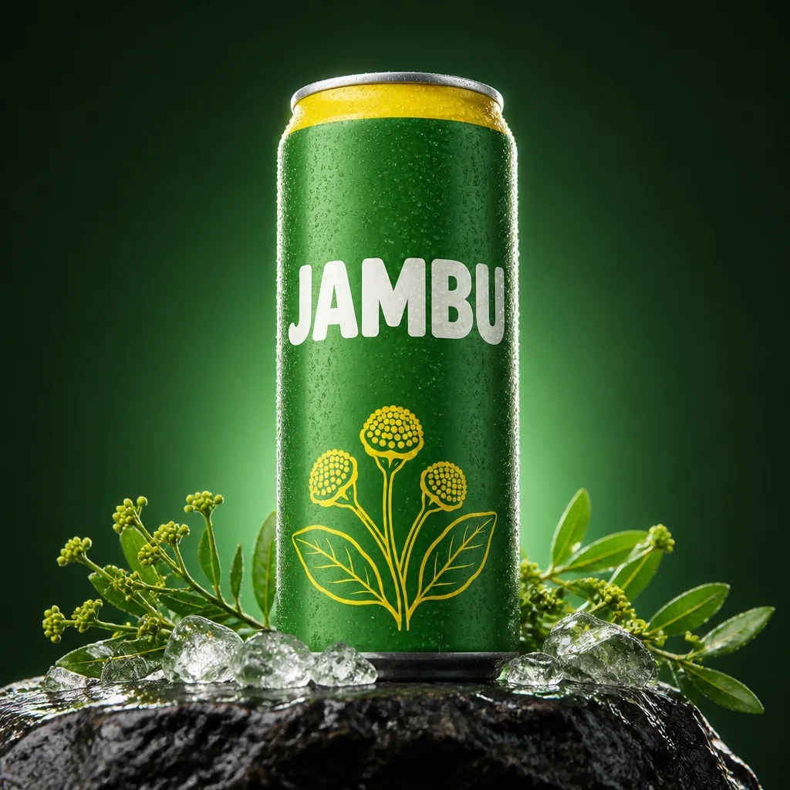
Instrução de edição usada (sobre a imagem-base)
Turn this packshot into a HERO product shot: the exact same can standing on a wet dark basalt stone, shot from a low angle so it looks monumental, fresh jambu sprigs with small yellow flower buds and crushed ice around its base, a fine layer of cold droplets on the can, dramatic deep-green gradient background, strong rim light from behind on both edges and a soft key light from the front-left. 50mm lens at f/5.6. Keep the can's shape, colors, yellow band and JAMBU wordmark identical.
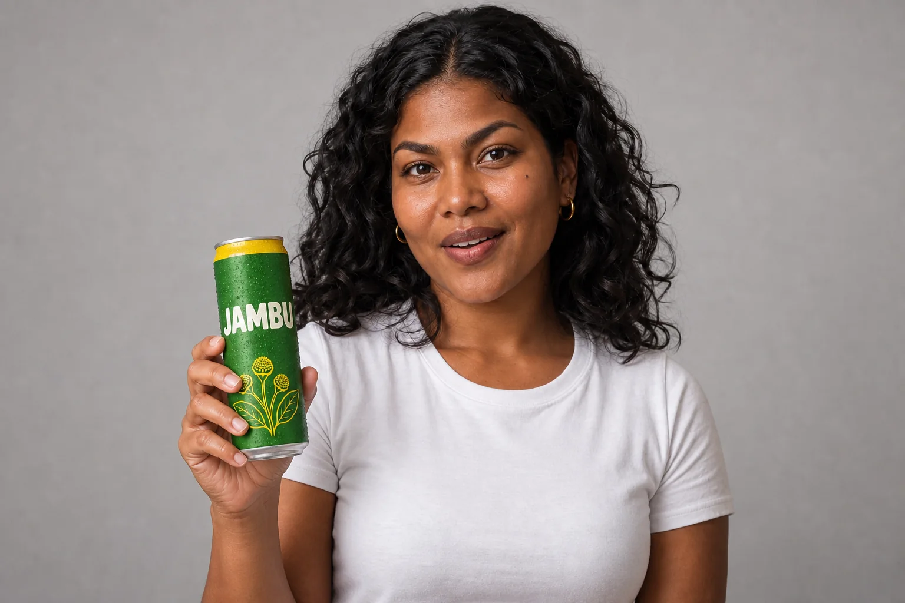
Instrução de edição usada (sobre a imagem-base)
Keep this exact woman — same face, skin tone, beauty mark, hair, gold hoop earrings and white t-shirt — and the same studio background and light. Now she holds a cold slim soda can at chest height in her right hand, label facing the camera: a matte leaf-green (#2F7D32) aluminum can with a bright yellow (#F2C200) band around the top, the wordmark 'JAMBU' in bold rounded cream-white uppercase letters, a small yellow line drawing of jambu flower buds near the bottom, and condensation droplets. She smiles with a hint of surprise, as if she has just felt the tingle of the drink.
As duas âncoras da campanha Jambu. À esquerda, o hero shot, que é uma edição da lata-base do módulo 1-1. À direita, a heroína Maíra segurando a lata, uma edição da imagem-base dela, que você vai conhecer no tópico 4. Nenhuma das duas foi gerada do zero.
Pense em cobertura, não em “a imagem perfeita”. Um fotógrafo de campanha volta do estúdio com o produto em vários ângulos e a modelo em várias poses, porque o editor e o designer vão precisar de opções. Com IA é igual: você monta um banco de variações controladas, não depende de uma geração de sorte.
1Os quatro product shots básicos
O que é
Cobertura mínima de produto
| Shot | Como é | Serve para | Palavras-chave no prompt |
|---|---|---|---|
| Hero | produto sozinho, ângulo baixo, cenário dramático | capa, banner, key visual | hero product shot, low angle, rim light, monumental |
| 3/4 | produto girado ~45°, mostra frente e lado | e-commerce, catálogo, mostrar volume | three-quarter view, slightly above eye level |
| Macro de detalhe | um pedaço do produto enche o quadro | sensação: gelado, textura, frescor | extreme close-up, 85mm macro, condensation |
| Flat lay | vista de cima, produto deitado entre objetos | redes sociais, receitas, “kit” | top-down flat lay, overhead, negative space |
Por que aprender
Os quatro têm funções diferentes: o hero impressiona, o 3/4 informa, o macro faz sentir e o flat lay organiza. Como todos partem da lata-base anexada, o rótulo, o verde e a faixa amarela se mantêm, e a sequência parece uma sessão de estúdio de verdade.
Conceitos-chave em ação
Instrução de edição usada (sobre a imagem-base)
Turn this packshot into a HERO product shot: the exact same can standing on a wet dark basalt stone, shot from a low angle so it looks monumental, fresh jambu sprigs with small yellow flower buds and crushed ice around its base, a fine layer of cold droplets on the can, dramatic deep-green gradient background, strong rim light from behind on both edges and a soft key light from the front-left. 50mm lens at f/5.6. Keep the can's shape, colors, yellow band and JAMBU wordmark identical.
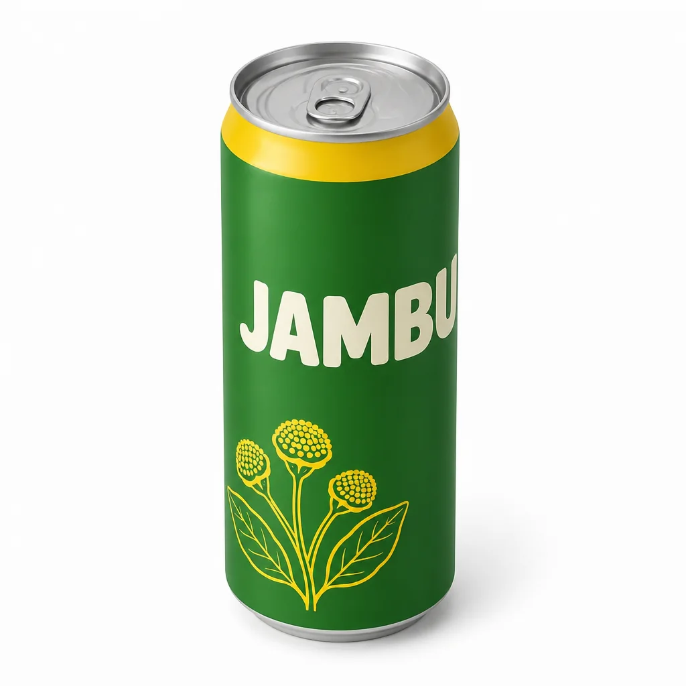
Instrução de edição usada (sobre a imagem-base)
Completely re-shoot the can from a new camera position: a THREE-QUARTER VIEW. Rotate the can about 45° on its vertical axis so the JAMBU wordmark sits toward the left side of the cylinder and its last letters start to wrap out of view, with the jambu flower illustration seen at an angle; raise the camera about 30° above the can so the top lid reads as a clearly visible ellipse with the pull tab. A cylinder only shows its angle through the label, so the rotation must be obvious. Same white seamless background, same soft studio light, soft contact shadow. Keep the can's design, colors and JAMBU wordmark identical, wrapping correctly around the cylinder.
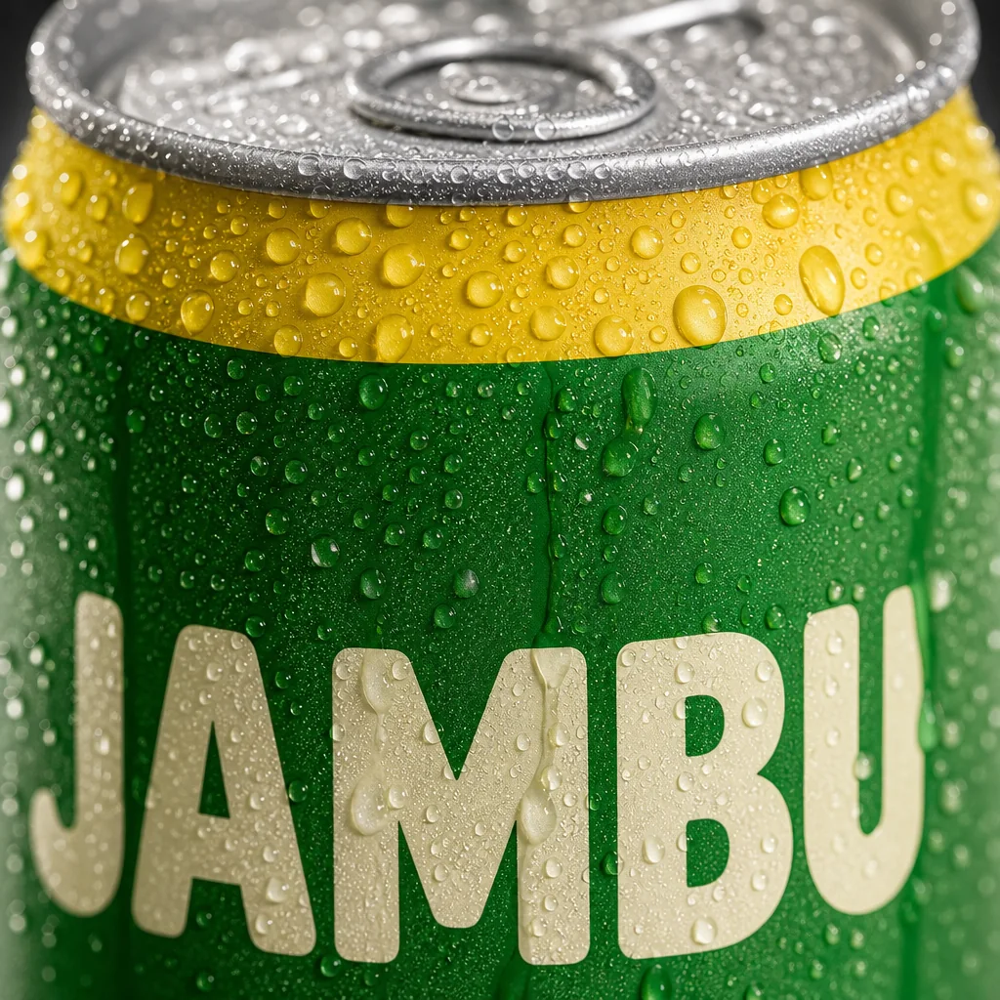
Instrução de edição usada (sobre a imagem-base)
Completely re-shoot as an EXTREME CLOSE-UP macro product shot: 85mm macro lens at f/2.8, the frame filled with the upper part of the can — the yellow band and the top of the JAMBU wordmark — covered in cold condensation droplets of different sizes, a few drops running down, razor-sharp focus on the droplets, the rest falling into soft blur, backlight making the drops glow. Keep the can's design and colors identical.
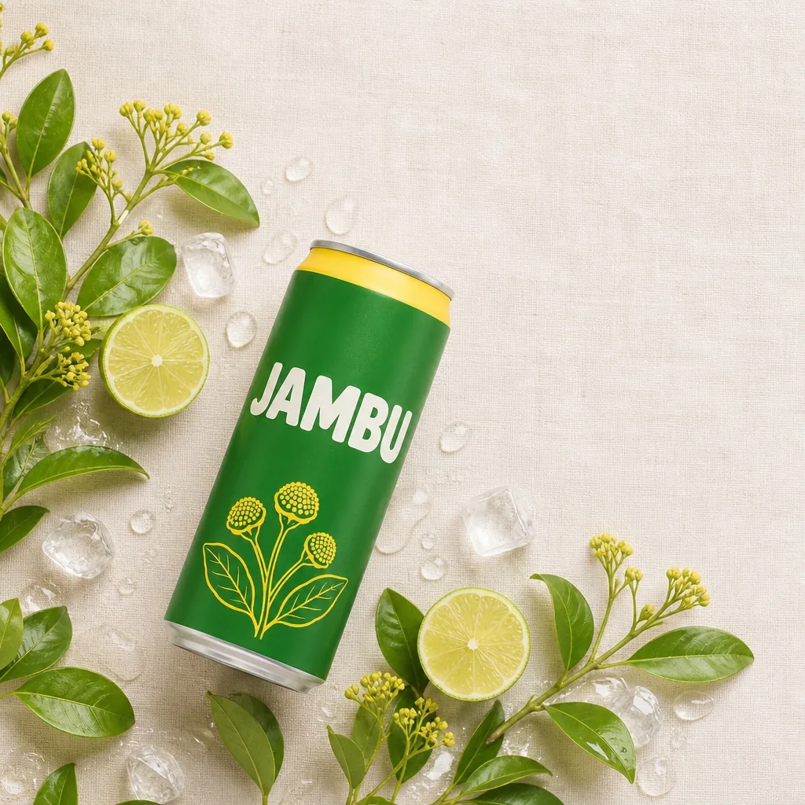
Instrução de edição usada (sobre a imagem-base)
Completely re-shoot this exact can as a TOP-DOWN FLAT LAY: the can lying on its side diagonally on a cream linen surface, arranged with fresh jambu sprigs with yellow flower buds, halved limes, ice cubes and a few drops of water, clean negative space in the upper right, soft even overhead daylight, camera pointing straight down. Keep the can's design, colors and JAMBU wordmark identical.
Quatro edições diretas da lata-base (nenhuma é edição de edição). O hero põe a lata sobre pedra escura molhada, com gelo e jambu na base, fundo verde-escuro e contornos acesos por trás (o ângulo baixo pedido ficou discreto: a câmera desceu pouco). O 3/4 gira a lata e sobe um pouco a câmera para mostrar a tampa. O macro enche o quadro com as gotas sobre a faixa amarela. O flat lay deita a lata entre limões, gelo e jambu e deixa espaço livre para texto. Abra os prompts: todos terminam com a mesma trava, “Keep the can's design, colors and JAMBU wordmark identical”.
Ordem de produção da cobertura
- Comece pelo 3/4 em fundo branco: é o teste mais duro do rótulo (ele precisa dobrar certo no cilindro). Se passar, a base está boa.
- Faça o macro: ele revela se a cor e a textura da lata aguentam de perto.
- Faça o flat lay já pensando em texto: peça espaço negativo onde o título vai entrar.
- Deixe o hero por último, quando você já sabe o clima da campanha (cenário, cor do fundo, tipo de luz).
- Coloque as quatro lado a lado e confira: mesmo verde, mesma faixa, mesma letra? Se uma destoar, refaça só ela, a partir da base.
2Linguagem de câmera: por que os termos de fotografia funcionam
O que é
Esses modelos foram treinados com fotografias e suas descrições. Por isso a linguagem do set de filmagem funciona tão bem: “Dutch angle” (ângulo holandês) não é só “torto”, é um jeito específico de inclinar a câmera que o modelo já viu milhares de vezes. Quanto mais você usa o vocabulário da fotografia, mais realista e intencional fica o resultado.
Ângulos que mais rendem em campanha
| Termo (no prompt) | O que a câmera faz | Efeito |
|---|---|---|
| eye level | altura dos olhos | neutro, honesto |
| extreme low angle | bem abaixo, olhando para cima | poder, heroísmo, energia de clipe |
| high angle / top-down | de cima | vulnerável (pessoa) ou gráfico (objetos) |
| Dutch angle | câmera inclinada 15–30° | tensão, movimento, irreverência |
| macro profile | perfil bem de perto | intimidade, textura de pele |
| over-the-shoulder | por trás do ombro de alguém | o espectador entra na cena |
| three-quarter view | sujeito girado ~45° | volume, naturalidade |
Por que aprender
Você pode ligar esses pacotes desde o primeiro prompt ou aplicá-los depois como edição, que é o que fizemos abaixo. A vantagem da edição é comparar com honestidade: mesma mulher, mesmo gesto, mesma feira, e só o “equipamento” trocado.
Conceitos-chave em ação
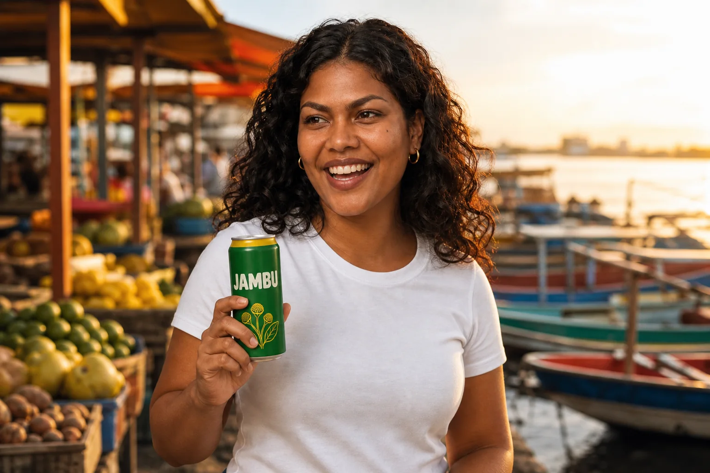
Instrução de edição usada (sobre a imagem-base)
Keep this exact woman — same face, skin tone, beauty mark, hair, gold hoop earrings and white t-shirt — and place her in a new context: standing at a riverside open-air market in Belém at golden hour, colorful wooden boats and fruit stalls softly blurred behind her, holding a matte leaf-green JAMBU soda can with a yellow top band and cream wordmark, laughing toward someone off-camera. Warm late-afternoon sunlight from the right. Medium shot, 50mm lens. No readable signs or other text in the scene besides the can wordmark.
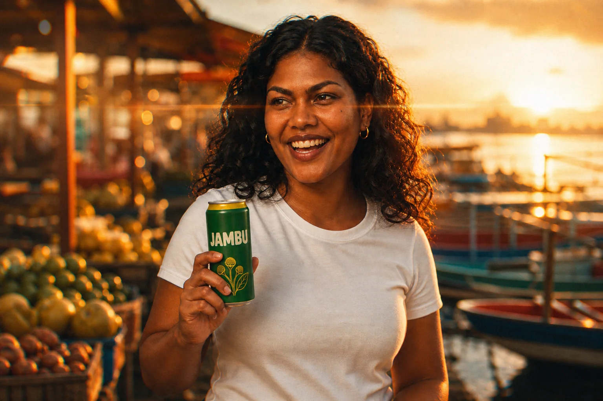
Instrução de edição usada (sobre a imagem-base)
Fully re-render this ENTIRE image with a strong cinematic camera look: shot on a 35mm anamorphic lens at f/2.8, horizontal streak lens flares from the low sun, oval bokeh in the background, slight softness toward the frame edges, subtle motion blur, fine film grain, gentle chromatic aberration, warm color grade, like a frame from a high-end digital cinema camera. Keep the same woman, pose, can and composition.
A imagem da direita é uma edição da esquerda que só troca o “equipamento”: 35 mm anamórfico a f/2.8, flare horizontal do sol, bokeh oval, bordas suaves, grão fino e cor quente. Maíra, o gesto e a feira ficaram. Compare os reflexos e o desfoque do fundo: é aí que o pacote aparece.
Dois pacotes de câmera para guardar
CINEMA (atmosfera, cena aberta): Shot on a 35mm anamorphic lens at f/2.8, horizontal streak lens flares, oval bokeh, slight edge softness, subtle motion blur, fine film grain, gentle chromatic aberration, warm color grade, high-end digital cinema camera look. MACRO (detalhe, pele, gotas): Macro photography, 85mm prime lens at f/1.8, razor-sharp focus on skin texture and condensation droplets, background dissolved into soft blur, high dynamic range, incredibly detailed.
Acabamento: termos que mudam a “câmera” da imagem
| Termo | O que pede | Quando usar |
|---|---|---|
| film grain | grão de filme fotográfico | dar textura e tirar o aspecto “limpo demais” do digital |
| high dynamic range (HDR) | detalhe nas sombras e nas altas luzes ao mesmo tempo | produto brilhante contra fundo escuro, contraluz |
| chromatic aberration | franja colorida leve nas bordas de alto contraste | reforçar a aparência de lente real (use pouco) |
| shot on a high-end digital cinema camera | cor e contraste de cinema, alcance dinâmico largo | cenas de comercial, quadros-chave para vídeo |
| high-resolution full-frame mirrorless camera | nitidez extrema, detalhe de pele e material | macro, retrato, e-commerce |
3Macro: textura que dá sede
O que é
Macro é chegar tão perto que um detalhe vira o assunto. Na fotografia real é uma lente específica; no prompt, “85mm macro, f/1.8, sharp focus on…” faz o modelo concentrar nitidez num ponto e derreter o resto. O segredo é dizer onde está o foco: nas gotas, nos poros, na borda da lata.
Por que aprender
Campanha de bebida vende temperatura. Uma lata seca num fundo branco informa; a mesma lata coberta de gotas, com uma escorrendo, dá vontade. Na pessoa, o macro de perfil com a lata quase tocando os lábios junta as duas coisas: textura humana e produto.
Conceitos-chave em ação
Instrução de edição usada (sobre a imagem-base)
Completely re-shoot as an EXTREME CLOSE-UP macro product shot: 85mm macro lens at f/2.8, the frame filled with the upper part of the can — the yellow band and the top of the JAMBU wordmark — covered in cold condensation droplets of different sizes, a few drops running down, razor-sharp focus on the droplets, the rest falling into soft blur, backlight making the drops glow. Keep the can's design and colors identical.
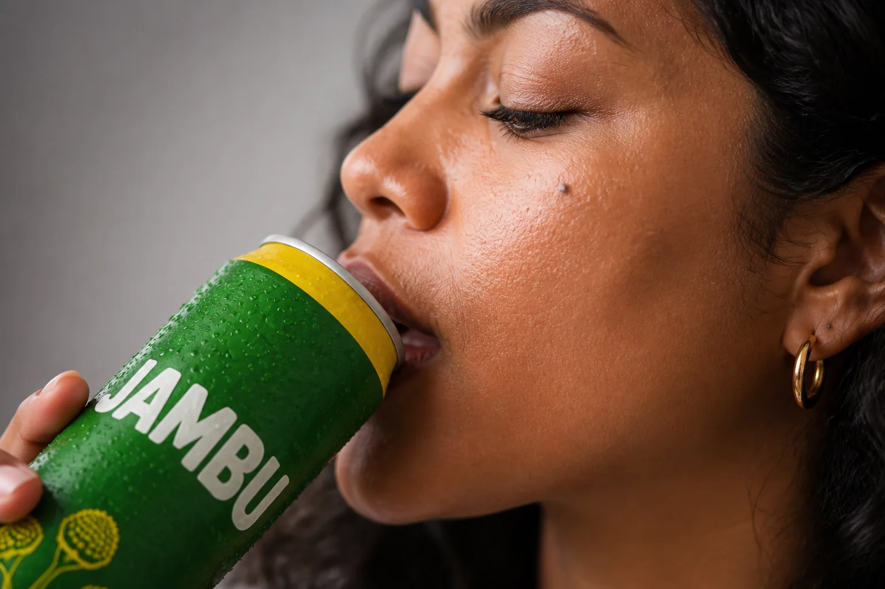
Instrução de edição usada (sobre a imagem-base)
Completely re-shoot as a MACRO PROFILE shot, a totally new framing: extreme close-up of this same woman's face in side profile, her lips about to touch the rim of the same green JAMBU can, 85mm prime macro lens at f/1.8, razor-sharp focus on skin texture, fine facial hair and the condensation droplets on the can, background dissolved into soft blur, soft studio light, high dynamic range. Keep her identity: skin tone, beauty mark, hair and gold hoop earring.
O mesmo pacote macro (85 mm, f/1.8–2.8, foco cravado num ponto) em dois assuntos. À esquerda, edição da lata-base: gotas de tamanhos diferentes sobre a faixa amarela, algumas escorrendo, contraluz fazendo-as brilhar. À direita, edição da imagem “heroína + produto”: perfil de Maíra com os lábios já na borda da lata (o prompt pedia “quase tocando”; o modelo adiantou o gole), pele e gotas nítidas, fundo dissolvido.
✓ Macro que funciona
- diz onde está o foco (“sharp focus on the droplets”)
- abertura pequena em número (f/1.8–2.8) para desfocar o resto
- luz de trás ou lateral, que acende gotas e poros
✗ Macro que falha
- “macro” sem dizer o assunto: o modelo escolhe um detalhe qualquer
- f/11 com macro: tudo nítido, some a sensação de proximidade
- luz chapada de frente: gotas viram manchas brancas
4A heroína: ficha e imagem-base
O que é
Todo fluxo profissional de anúncio com IA começa pelo mesmo passo: gerar o retrato do personagem principal antes de qualquer cena. Esse retrato define o nível de realismo, a luz, a textura de pele e o jeito da marca, e depois entra como referência em todas as outras imagens, inclusive nas que mostram a personagem pequena, ao fundo.
Ficha da heroína Jambu (fictícia)
| Campo | Maíra |
|---|---|
| Idade e origem | 28 anos, de Belém do Pará |
| Pele e traços | pele marrom-escura de subtom quente; traços de ascendência indígena e negra; maçãs do rosto altas |
| Rosto | sobrancelhas grossas e escuras, olhos castanho-escuros, pinta na maçã do rosto esquerda |
| Cabelo | preto, ondulado-cacheado, volumoso, na altura dos ombros, repartido ao meio |
| Acessório fixo | argolas pequenas douradas |
| Figurino-base | camiseta branca lisa de gola redonda (troca por cena; a argola fica) |
| Jeito | confiante, riso fácil, humor de quem é da terra |
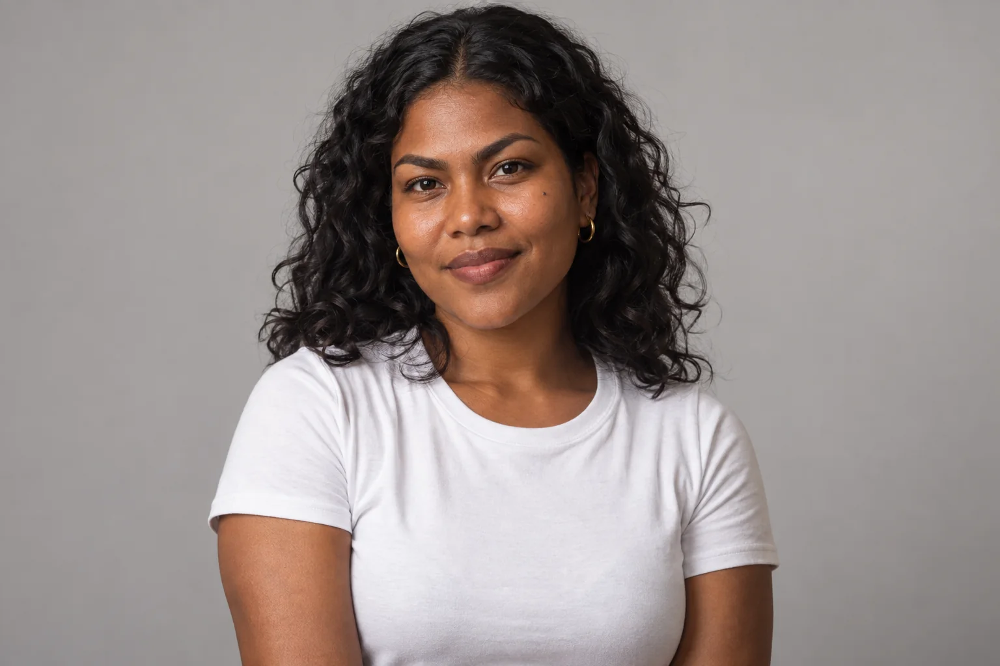
Prompt usado
Waist-up studio portrait of Maíra, a fictional 28-year-old woman from Belém do Pará, Brazil: deep brown skin with warm undertones, mixed Indigenous and Afro-Brazilian features, high cheekbones, thick dark eyebrows, warm dark-brown eyes, a small beauty mark on her left cheekbone, and voluminous shoulder-length black wavy-curly hair with a middle part. Small gold hoop earrings. She wears a plain white crew-neck cotton t-shirt. Relaxed, confident expression with a slight closed-mouth smile, looking straight at the camera, shoulders slightly angled. Centered in the frame with space on both sides. Seamless warm light-grey studio background. Large soft key light from front-left, gentle fill, soft shadow on the right side of her face. 85mm lens at f/4, eye level. Natural skin texture with visible pores, no heavy retouching, neutral color grade. Clean character reference photograph.
A imagem-base da heroína: plano da cintura para cima, olhando para a câmera, fundo cinza-claro de estúdio, luz suave da frente-esquerda, 85 mm. Tudo o que está na ficha está visível: cabelo cacheado nos ombros, argolas douradas, a pinta na maçã do rosto e a camiseta branca. Pele com poros e sem retoque pesado, porque é esse o realismo que as outras cenas vão herdar.
Por que aprender
Um traço marcante (a pinta, as argolas) funciona como assinatura: é o que o espectador — e você, na conferência — usa para reconhecer a personagem de uma peça para outra. Fundo neutro e rosto inteiro visível fazem o modelo aproveitar só a pessoa quando você anexar a imagem, e não o cenário.
Se a imagem não parece real, o vídeo nunca vai parecer.
Essa frase vale para a campanha toda. Na trilha 3, as imagens da heroína viram quadros de storyboard e, depois, pontos de partida para vídeo. Um animador de IA não conserta um rosto plástico ou um olho torto: ele os anima. Por isso vale gastar tempo nesta etapa, gerando várias opções, refinando por texto e só travando a base quando ela passar no teste de parecer uma foto de gente de verdade.
Conceitos-chave em ação
Como chegar à imagem-base
- Escreva a ficha antes de gerar: idade, origem, pele, rosto, cabelo, um traço marcante, acessório fixo.
- Gere várias opções com o mesmo prompt de estúdio neutro e escolha a que mais parece “gente de verdade”.
- Refine por texto o que estiver fora (“make her hair slightly longer”), sem regenerar do zero.
- Trave a versão escolhida: renomeie como
jambu_ref_heroina_base_v01e não mexa mais nela. - A partir daqui, toda cena com a heroína anexa essa imagem.
5Heroína + produto: juntando as duas bases
O que é
No Nano Banana Pro você anexa as duas imagens-base e diz o papel de cada uma. É o momento em que a ordem da hierarquia (objeto → contexto → técnica) encontra as referências: primeiro quem e o quê, depois onde, depois como.
Heroína + produto com duas referências (Nano Banana Pro ou similar)
Objetivo: Colocar a personagem e a lata numa cena nova sem perder nenhuma das duas.
Image 1 is the product: use this exact can, same shape, label, colors and JAMBU wordmark. Image 2 is the character: keep this exact woman, same face, skin tone, beauty mark on her left cheekbone, curly black hair and gold hoop earrings. She stands at a riverside open-air market in Belém at golden hour, holding the can from image 1 at chest height, label facing the camera, laughing toward someone off-camera. Colorful wooden boats and fruit stalls softly blurred behind her. Medium shot, 50mm lens at f/2.8, warm late-afternoon sunlight from the right, natural skin texture. No readable signs or other text besides the can wordmark.
Como verificar: Confira as duas âncoras separadamente: o rótulo está igual ao da lata-base? A pinta, o cabelo e as argolas estão lá? Se um dos dois derivou, reforce só a frase dele e gere de novo.
Por que aprender
Sem papéis definidos, o modelo mistura: pinta o fundo cinza do estúdio na cena, ou tira a cor da camiseta para pôr na lata. Com papéis claros, cada referência empresta só o que deve.
Conceitos-chave em ação
Instrução de edição usada (sobre a imagem-base)
Keep this exact woman — same face, skin tone, beauty mark, hair, gold hoop earrings and white t-shirt — and the same studio background and light. Now she holds a cold slim soda can at chest height in her right hand, label facing the camera: a matte leaf-green (#2F7D32) aluminum can with a bright yellow (#F2C200) band around the top, the wordmark 'JAMBU' in bold rounded cream-white uppercase letters, a small yellow line drawing of jambu flower buds near the bottom, and condensation droplets. She smiles with a hint of surprise, as if she has just felt the tingle of the drink.
Instrução de edição usada (sobre a imagem-base)
Keep this exact woman — same face, skin tone, beauty mark, hair, gold hoop earrings and white t-shirt — and place her in a new context: standing at a riverside open-air market in Belém at golden hour, colorful wooden boats and fruit stalls softly blurred behind her, holding a matte leaf-green JAMBU soda can with a yellow top band and cream wordmark, laughing toward someone off-camera. Warm late-afternoon sunlight from the right. Medium shot, 50mm lens. No readable signs or other text in the scene besides the can wordmark.
As duas são edições da imagem-base da heroína. Na esquerda, mesmo estúdio, e agora com a lata erguida junto ao ombro e a boca entreaberta de surpresa, como quem acabou de sentir o formigamento. Na direita, a mesma Maíra levada para a feira ribeirinha no fim da tarde, rindo para alguém fora do quadro. Nas duas, a edição recebeu duas imagens anexadas: o retrato da Maíra (a base editada) e a lata-base (o produto). Por isso o rótulo saiu igual ao da lata-base — faixa amarela, JAMBU em creme e os três botões de flor —, mesmo com o prompt ainda descrevendo a lata em texto. É o método do prompt acima: cada referência com um papel.
6A mesma heroína em ângulos diferentes
O que é
Quando a base “heroína + produto” está boa, ela vira ponto de partida para a cobertura de ângulos. Uma instrução por edição: um ângulo, uma mudança de gesto que combine com ele e a trava de identidade no fim.
Por que aprender
O mesmo produto e a mesma pessoa contam histórias diferentes conforme a câmera. O ângulo baixo extremo transforma Maíra em ícone; o holandês dá um tom brincalhão, de videoclipe. Na hora de montar a campanha, você escolhe o ângulo pelo tom de cada peça.
Conceitos-chave em ação
Instrução de edição usada (sobre a imagem-base)
Keep this exact woman — same face, skin tone, beauty mark, hair, gold hoop earrings and white t-shirt — and the same studio background and light. Now she holds a cold slim soda can at chest height in her right hand, label facing the camera: a matte leaf-green (#2F7D32) aluminum can with a bright yellow (#F2C200) band around the top, the wordmark 'JAMBU' in bold rounded cream-white uppercase letters, a small yellow line drawing of jambu flower buds near the bottom, and condensation droplets. She smiles with a hint of surprise, as if she has just felt the tingle of the drink.
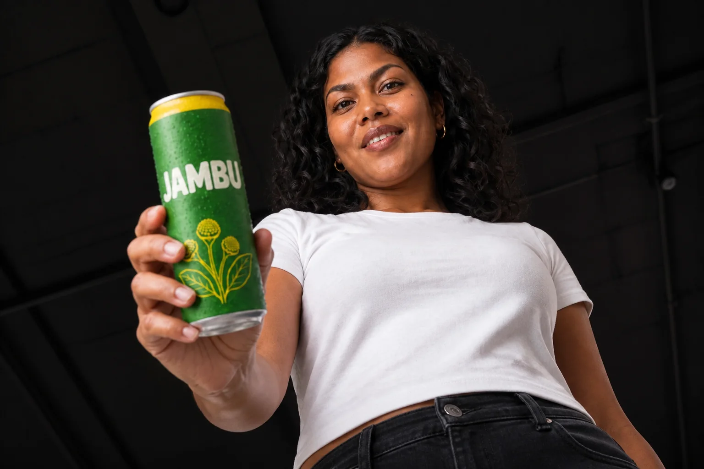
Instrução de edição usada (sobre a imagem-base)
Completely re-shoot this scene from an EXTREME LOW ANGLE, a dramatically different camera position: the camera near her waist looking up, she raises the JAMBU can toward the lens and looks down at the camera with a confident smile, the dark studio ceiling above her. Keep the same woman, outfit, can design and lighting.
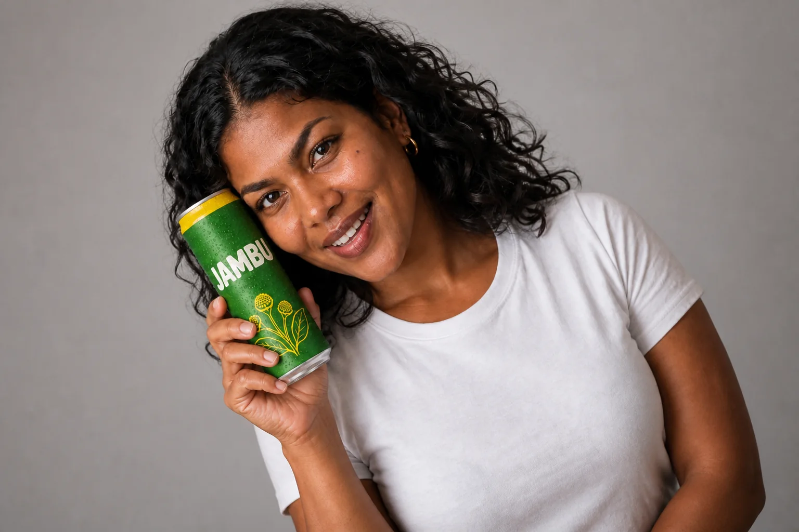
Instrução de edição usada (sobre a imagem-base)
Completely re-shoot this scene with a strong DUTCH ANGLE, clearly visible: the whole camera tilted about 20° to the left, creating a diagonal horizon and restless energy, she leans into the tilt holding the can near her cheek with a playful grin. Keep the same woman, outfit, can design, lighting and background.
As duas da direita são edições da base à esquerda. No ângulo baixo extremo, a câmera desce até a cintura e Maíra estende a lata na direção da lente: vira pose de pôster. No holandês, ela inclina a cabeça e encosta a lata no rosto, e o clima fica de videoclipe — mas repare que a inclinação da câmera quase não se nota: num fundo liso de estúdio não há horizonte nem linha vertical para entortar. O holandês precisa de linhas no cenário (porta, janela, horizonte) para ser percebido; no estúdio, o modelo transferiu a inclinação para a pose. Confira nos três a pinta, o cabelo e as argolas: é assim que se checa se a identidade se manteve.
7Editar por texto sem perder a identidade
O que é
Uma das maiores mudanças desses modelos é a edição por instrução: você escreve o que quer trocar e ele troca, mantendo o resto. A estrutura da frase é sempre a mesma: Change ONLY <o quê> to <como>. Keep <lista do que fica> identical.
Por que aprender
Cada nova geração do zero é uma nova pessoa. Com edição, o rosto aprovado pelo cliente continua lá. Além disso, fica fácil mostrar ao cliente variações lado a lado (“camiseta branca ou amarela?”) sem nenhuma outra diferença que confunda a escolha.
Conceitos-chave em ação
Prompt usado
Waist-up studio portrait of Maíra, a fictional 28-year-old woman from Belém do Pará, Brazil: deep brown skin with warm undertones, mixed Indigenous and Afro-Brazilian features, high cheekbones, thick dark eyebrows, warm dark-brown eyes, a small beauty mark on her left cheekbone, and voluminous shoulder-length black wavy-curly hair with a middle part. Small gold hoop earrings. She wears a plain white crew-neck cotton t-shirt. Relaxed, confident expression with a slight closed-mouth smile, looking straight at the camera, shoulders slightly angled. Centered in the frame with space on both sides. Seamless warm light-grey studio background. Large soft key light from front-left, gentle fill, soft shadow on the right side of her face. 85mm lens at f/4, eye level. Natural skin texture with visible pores, no heavy retouching, neutral color grade. Clean character reference photograph.
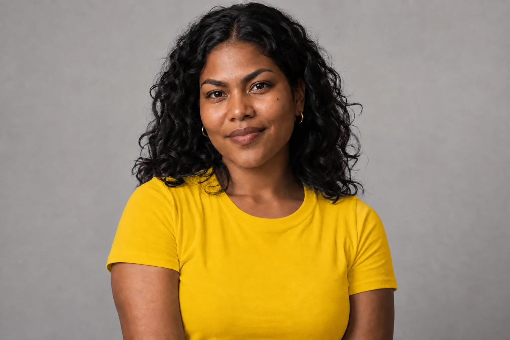
Instrução de edição usada (sobre a imagem-base)
Change ONLY the color of her t-shirt to jambu yellow (#F2C200). Keep her face, skin tone, beauty mark, hair, earrings, expression, pose, framing, background and lighting identical.
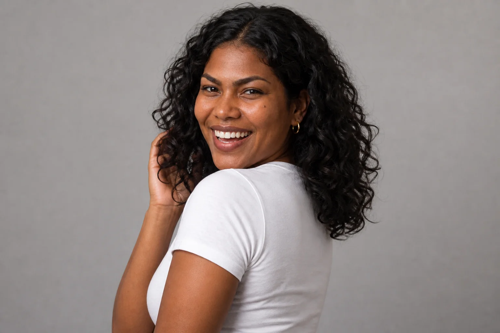
Instrução de edição usada (sobre a imagem-base)
Change ONLY her pose and expression: she turns her body to her left and looks back over her shoulder at the camera, laughing openly with crinkled eyes, one hand touching her hair. Keep her facial identity, skin tone, beauty mark, hair, earrings, white t-shirt, background and lighting identical.
Duas edições da imagem-base, cada uma com uma mudança. No centro, “Change ONLY the color of her t-shirt to jambu yellow (#F2C200)”: rosto, cabelo, luz e enquadramento ficaram. À direita, “Change ONLY her pose and expression”: ela gira, olha por cima do ombro e ri com a mão no cabelo, e a pinta, as argolas e a pele continuam. Repare que a cor da camiseta foi pedida em HEX, assunto do módulo 2-1.
✓ Instrução de edição boa
- uma mudança por edição
- “Change ONLY…” + a lista do que fica
- editar sempre a partir da base aprovada, não da última edição
- citar o traço marcante na trava (“keep the beauty mark”)
✗ Instrução que faz a personagem derivar
- “mude a roupa, a pose e o fundo e deixe mais bonita”
- encadear 5, 6 edições uma sobre a outra (cada uma degrada um pouco)
- “make her look better / more professional” (o modelo muda o rosto)
- trocar a imagem-base no meio da campanha
Prática guiada: a cobertura da sua campanha: 3 de produto + 3 com a heroína
Você vai produzir o mesmo conjunto que a Jambu tem agora, a partir da sua imagem-base de produto do módulo 1-1: três product shots em ângulos diferentes e três cenas com a mesma personagem e o mesmo produto, em contextos diferentes.
Roteiro
- Anexe a imagem-base do produto e faça três edições: hero, 3/4 e macro (ou flat lay). Termine cada uma com a frase-trava.
- Escreva a ficha da sua personagem (7 campos, com um traço marcante).
- Gere o retrato de estúdio neutro, escolha o melhor e trave como imagem-base.
- Faça três cenas com personagem + produto (duas referências anexadas, papéis ditos) em três contextos diferentes.
- Numa delas, aplique um pacote de câmera (cinema ou macro) como edição e compare.
- Faça uma edição de texto simples (cor de roupa ou pose) sobre a imagem-base e confira a identidade.
Retrato-referência da personagem
Objetivo: Criar a imagem-base da personagem, neutra e completa.
Waist-up studio portrait of <nome>, a fictional <idade>-year-old <gênero> from <cidade/região>: <pele e subtom>, <traços do rosto>, <cor dos olhos>, <traço marcante e em que lado>, <cabelo: cor, textura, comprimento, repartido>. <Acessório fixo>. <Figurino-base simples, cor lisa>. Relaxed, confident expression, looking straight at the camera. Centered, space on both sides. Seamless light-grey studio background. Large soft key light from front-left, gentle fill. 85mm lens at f/4, eye level. Natural skin texture with visible pores, no heavy retouching, neutral color grade.
Como verificar: Todos os itens da ficha aparecem? O traço marcante está visível e do lado certo? Fundo neutro, rosto inteiro, sem acessórios que tapem o rosto?
Edição de ângulo sobre a cena heroína + produto
Objetivo: Mudar o ângulo com força, mantendo pessoa e produto.
Completely re-shoot this scene from an EXTREME LOW ANGLE, a dramatically different camera position: the camera near her waist looking up, she raises the <produto> toward the lens and looks down at the camera with a confident smile. Keep the same woman — face, skin tone, <traço marcante>, hair, <acessório> — the same outfit, the same product design and the same lighting.
Como verificar: A câmera mudou de verdade? Coloque ao lado da base: se parecer quase igual, reforce a posição da câmera. Depois confira o traço marcante e o rótulo.
Lição de casa
O cliente aprovou o kit do módulo 1-1 e agora quer ver a “sessão de fotos”: produto e rosto da marca, prontos para virar peças.
Nível básico (obrigatório)
- Três product shots da sua lata/embalagem (hero, 3/4, macro ou flat lay), todos editados da mesma imagem-base.
- Ficha da personagem + imagem-base aprovada.
- Três imagens personagem + produto em contextos diferentes.
- Uma edição de cor de roupa e uma de pose sobre a imagem-base.
- Monte uma folha com as 8 imagens lado a lado e marque com um círculo o traço marcante em cada uma: ele aparece em todas?
Nível avançado (desafio)
- Grade de ângulos: a mesma cena personagem + produto em 4 ângulos (altura dos olhos, low angle extremo, holandês, macro de perfil). Escreva uma frase por ângulo dizendo para que peça da campanha ele serve.
- Teste de deriva: encadeie 5 edições uma sobre a outra (camiseta → pose → fundo → luz → ângulo) e, em paralelo, faça as mesmas 5 mudanças sempre a partir da base. Compare a última de cada fila e registre onde a identidade começou a escapar.
Entregue/guarde: Pasta 01_refs atualizada (produto, cartela, personagem-base) e pasta 02_geracoes com as imagens e os prompts. Essas imagens são as referências das peças com texto do módulo 2-1.
Teste sua decisão
1. Você precisa da mesma lata em quatro fotos para um carrossel. Qual é o caminho?
Consultar a explicação
Gerar do zero cria quatro latas parecidas, não a mesma. Editar a base com a trava mantém o rótulo; recortes limitam os ângulos a um só ponto de vista.
2. Depois de 5 edições encadeadas, Maíra está com o cabelo mais liso e sem a pinta. O que fazer?
Consultar a explicação
Cada edição encadeada degrada um pouco a identidade. A regra é editar a partir da base aprovada, com no máximo dois níveis, e citar o traço marcante na trava.
3. O cliente quer uma peça “com cara de filme”, com reflexos horizontais e fundo em bolhas ovais. O que você acrescenta?
Consultar a explicação
Flare horizontal e bokeh oval são marcas da lente anamórfica: o termo técnico pede exatamente essa aparência. “Cinematic” é vago, e macro a f/11 faz o contrário.
Responder não marca a leitura nem bloqueia o próximo módulo.
O que levar desta aula
- Consistência vem de duas bases (produto e heroína) e de editar, nunca de gerar do zero o que já existe.
- Cobertura de produto: hero, 3/4, macro e flat lay, todos editados da mesma lata-base e com a frase-trava.
- Termos de fotografia são pacotes de aparência: extreme low angle, Dutch angle, 35 mm anamórfico, 85 mm macro f/1.8.
- O retrato do personagem vem primeiro: ficha com um traço marcante + imagem-base neutra.
- Duas referências, dois papéis: “image 1 is the product, image 2 is the character”.
- Edição por texto:
Change ONLY…+ o que fica, a partir da base, com no máximo dois níveis de edição encadeada.